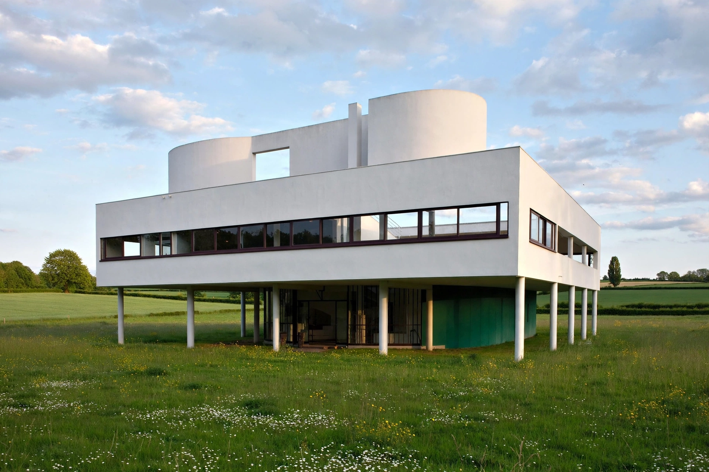

| Modern architecture | |
|---|---|
 | |
| Period | c. 1900–1980s |
| Key figures | Le Corbusier, Ludwig Mies van der Rohe, Walter Gropius, Frank Lloyd Wright, Alvar Aalto |
| Key movements | Bauhaus, International Style, De Stijl, Constructivism |
Modern architecture, or modernist architecture, was an architectural movement that was a dominant style from the early 20th century until the emergence of postmodernism in the 1970s–80s. It was based upon new technologies of construction — particularly steel, reinforced concrete, and glass — and upon a rejection of ornament and historical styles, following Louis Sullivan's dictum that "form follows function."
The movement drew on the Chicago School skyscrapers, the Deutscher Werkbund, and Art Nouveau experiments before crystallising in the 1920s through the Bauhaus school in Germany (founded by Walter Gropius, 1919), Dutch De Stijl, and Russian Constructivism. Le Corbusier formulated his "Five Points of Architecture" — pilotis, free plan, free façade, ribbon windows, and roof gardens — exemplified by the Villa Savoye (1931). Ludwig Mies van der Rohe's Barcelona Pavilion (1929) embodied his maxim "less is more."
The 1932 Museum of Modern Art exhibition curated by Henry-Russell Hitchcock and Philip Johnson codified the "International Style": volume over mass, regularity, and avoidance of applied decoration. After the Second World War the style dominated corporate and institutional building worldwide — glass-and-steel towers such as Mies and Johnson's Seagram Building (1958) — and mass housing projects, while regional variants (Brazilian modernism of Oscar Niemeyer, Scandinavian modernism of Alvar Aalto) softened its severity.
From the 1960s critics such as Jane Jacobs attacked modernist planning for destroying urban fabric; the 1972 demolition of the Pruitt–Igoe housing in St. Louis was famously declared by Charles Jencks to mark "the death of modern architecture." Postmodernism reacted against it, yet modernism's materials, open plans, and functional principles remain the basis of most contemporary building. Landmarks of the movement, including works of Le Corbusier, are UNESCO World Heritage Sites.
See also: Bauhaus; International Style (architecture); Le Corbusier; Brutalist architecture; Postmodern architecture.